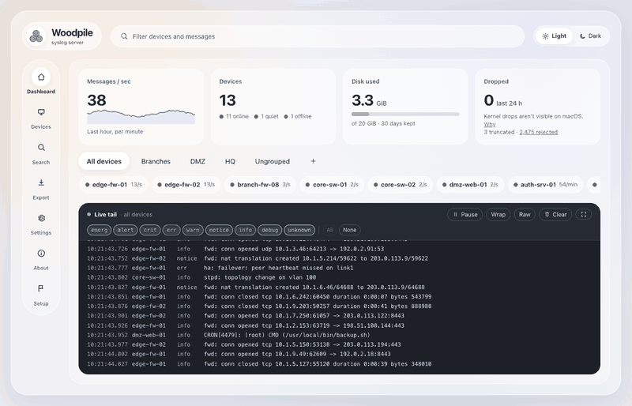

Woodpile: a syslog server you can install anywhere in a minute.
It keeps every message your devices send as plain text files, within a disk budget, and gives you a clean web page to watch them live, search them, and export a zip for support.

Download
Finding the latest release…
Other downloads
Every file is on the releases page, with
checksums.txt.
Portable or installer?
Just need it for a case?
Download the portable archive, unpack it and double-click woodpile. Nothing is installed. It runs while its
window is open, keeps the logs in a woodpile-data folder next to it, and opens the web page for you.
Good for a laptop on site, or a quick look at what a device sends.
Always-on server?
Use the installer: MSI on Windows, .pkg on macOS, .deb or .rpm on Linux. Woodpile
runs in the background as a service, starts with the computer, and keeps its logs across upgrades.
The service runs as its own restricted account, and uninstalling keeps your logs unless you ask.
Three steps
Install
Run the installer or the portable download. Then open http://localhost:8514/; its Setup page shows this machine's addresses.
Point your device at it
In the device's syslog settings, enter this machine's IP address, port 514, UDP (or TCP). The Setup page says when the first message arrives.
Search and export
Watch the live tail, search by text, device and time, and build a zip of exactly what support needs, with checksums.
What you get
- Listens on UDP and TCP port 514 straight away, IPv4 and IPv6, with no setup.
- Lenient parsing of RFC 5424, RFC 3164 and the usual odd formats; the raw message is always kept exactly as received.
- Plain text files, one folder per device and one file per day, compressed once the day is over.
- Keeps 30 days or 20 GB by default, and never fills the disk.
- A dashboard with message rates, devices that went quiet, and a live tail.
- Search by text or regular expression, devices, time and severity, with the lines around each hit.
- Export zips with a manifest, SHA-256 checksums and a report of any gaps, so the recipient can trust what they get.
- Name and group devices; an optional sender allowlist.
- The web page is on this machine only by default. LAN mode adds HTTPS and a password, and a login needs both a cookie and a session secret, so a stolen cookie alone is useless.
- Windows, macOS and Linux, on x64 and ARM; MIT licensed.
The full list is in the changelog.
The first time you open it
Woodpile's downloads aren't code-signed yet, so your computer asks once before running them. That's expected; you can check
any download against checksums.txt on the release page.
Windows
If the browser says the file "isn't commonly downloaded", choose Keep. When "Windows protected your PC" appears, click More info, then Run anyway.
macOS
If it says the file "can't be opened", click Done, open System Settings → Privacy & Security, scroll down to the message about Woodpile and click Open Anyway.
Privacy
Woodpile never connects out. No telemetry, no update checks: your logs stay on your machine. The About page shows the version, with a link to the releases page if you want to look for a newer one yourself.